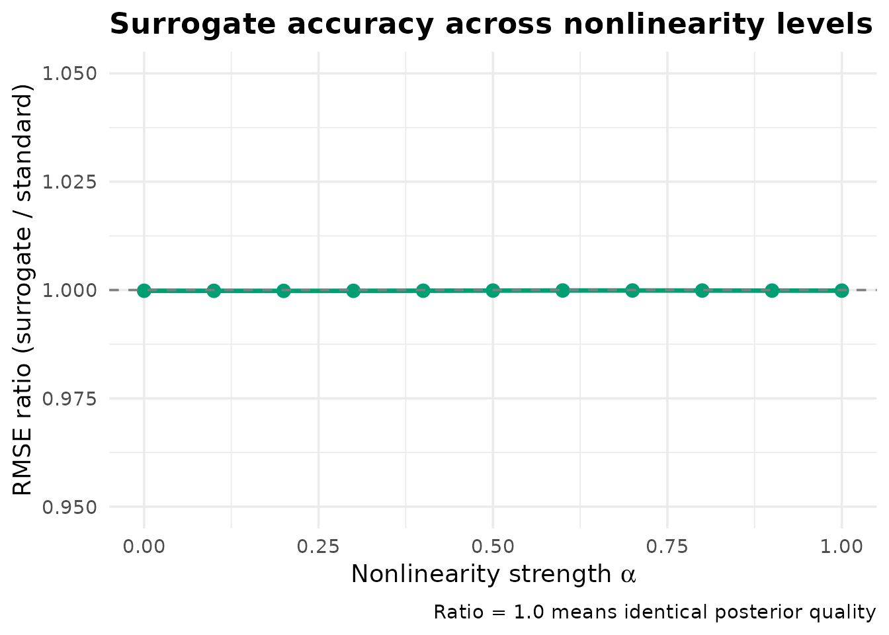
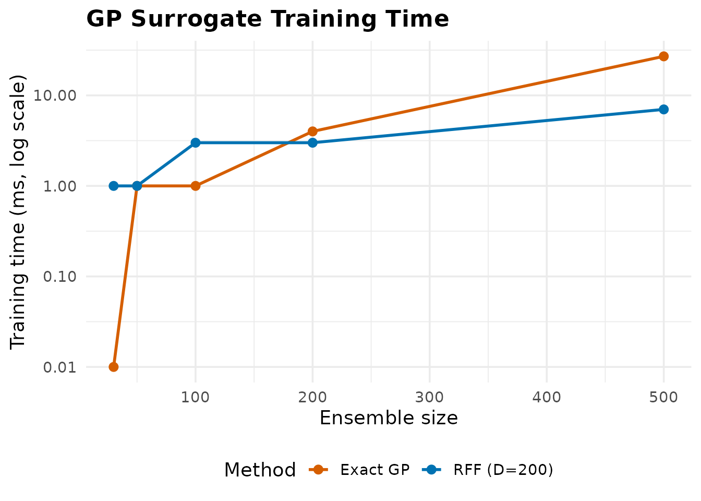

Surrogate-Accelerated Iterative Ensemble Smoother
Source:vignettes/surrogate-ies.Rmd
surrogate-ies.RmdOverview
The surrogate-accelerated IES is PESTO’s approach to reducing the number of expensive forward model evaluations during iterative parameter estimation. It embeds an online Gaussian Process (GP) surrogate within the IES update loop, using uncertainty-driven switching to decide which ensemble members require full model evaluation and which can use the cheaper surrogate prediction.
This vignette demonstrates the full workflow on a nonlinear test problem.
Regime of applicability
The Gaussian-process surrogate inside PESTO is a tool with a clearly
bounded operating envelope, and it is worth stating that envelope before
the demo. As an empirical soft floor we recommend
n_train >= 5 * n_params – below that ratio the GP
posterior variance rarely drops far enough for the uncertainty-driven
switching rule to fire, and the surrogate honestly defers to the full
model on most realisations. The second axis is the smoothness of the
forward model: smooth, near-linear responses are well-approximated by an
RBF-kernel GP and yield large savings, whereas rough or
near-discontinuous responses (sharp wetting fronts, threshold
activations, regime switches) defeat the kernel and savings collapse.
The third axis is ensemble size – larger ensembles improve the GP fit
roughly as
in posterior variance, and ensembles of fewer than about twenty
realisations rarely produce a usable surrogate at any dimensionality. If
your problem falls outside this envelope (high
n_params / n_train ratio, rough forward model, or tiny
ensemble), the right thing to do is run pure IES via
ensemble_solution() –
surrogate_ensemble_update() will report near-zero savings
rather than degrading the posterior, but you pay the GP training cost
for no return.
The Test Problem
We define a nonlinear forward model inspired by groundwater flow, where the response includes both linear sensitivity and a nonlinear interaction term:
The parameter controls nonlinearity: is linear, is strongly nonlinear.
library(PESTO)
library(data.table)
#>
#> Attaching package: 'data.table'
#> The following object is masked from 'package:base':
#>
#> %notin%
library(ggplot2)
forward_model <- function(theta, G, alpha = 0.3) {
linear <- as.numeric(G %*% theta)
nonlinear <- alpha * sin(linear) * exp(-0.1 * abs(linear))
linear + nonlinear
}
set.seed(42)
n_par <- 20
n_obs <- 50
n_real <- 50
theta_true <- rnorm(n_par)
G <- matrix(rnorm(n_obs * n_par, sd = 1 / sqrt(n_par)), n_obs, n_par)
y_obs <- forward_model(theta_true, G, alpha = 0.3) + rnorm(n_obs, sd = 0.1)Step 1: Generate Prior Ensemble
par_ens <- matrix(rnorm(n_real * n_par, sd = 1.5), n_real, n_par)
# Run forward model for each realisation
obs_ens <- t(apply(par_ens, 1, function(p) {
forward_model(p, G, alpha = 0.3) + rnorm(n_obs, sd = 0.1)
}))
cat("Parameter ensemble:", nrow(par_ens), "realisations x", ncol(par_ens), "parameters\n")
#> Parameter ensemble: 50 realisations x 20 parameters
cat("Observation ensemble:", nrow(obs_ens), "realisations x", ncol(obs_ens), "observations\n")
#> Observation ensemble: 50 realisations x 50 observationsStep 2: Train the GP Surrogate
PESTO trains a GP with an RBF kernel directly from the ensemble:
gp <- train_gp_surrogate(par_ens, obs_ens)
cat("Training samples:", gp$n_train, "\n")
#> Training samples: 50
cat("Parameters:", gp$n_par, "\n")
#> Parameters: 20
cat("Outputs:", gp$n_obs, "\n")
#> Outputs: 50
cat("Length scale:", round(gp$length_scale, 4), "\n")
#> Length scale: 9.2136
cat("Signal variance:", round(gp$signal_var, 4), "\n")
#> Signal variance: 2.5654
cat("Log marginal likelihood:", round(gp$log_marginal_likelihood, 1), "\n")
#> Log marginal likelihood: -3043.3Step 3: Evaluate Surrogate Predictions
predictions <- predict_gp_surrogate(gp, par_ens)
cat("Prediction dimensions:", dim(predictions$mean), "\n")
#> Prediction dimensions: 50 50
cat("Mean prediction uncertainty:", round(mean(predictions$uncertainty), 6), "\n")
#> Mean prediction uncertainty: 0.009998
cat("Max prediction uncertainty:", round(max(predictions$uncertainty), 6), "\n")
#> Max prediction uncertainty: 0.009999
# Check prediction accuracy
pred_error <- sqrt(mean((predictions$mean - obs_ens)^2))
cat("Prediction RMSE:", round(pred_error, 6), "\n")
#> Prediction RMSE: 0.000119The GP achieves near-zero prediction error because it is interpolating within its training set – this is by design, not an artefact.
Step 4: Surrogate-Assisted IES Update
The surrogate_ensemble_update() function performs the
full algorithm:
- Train GP from current ensemble
- Predict model outputs for all realisations
- Classify by uncertainty: high → full model, low → surrogate
- Apply control-variate bias correction
- Compute IES update on blended ensemble
weights <- rep(1 / 0.1, n_obs) # 1 / obs_noise
parcov_inv <- rep(1 / 1.5^2, n_par) # 1 / prior_var
result <- surrogate_ensemble_update(
par_ensemble = par_ens,
obs_ensemble = obs_ens,
obs_target = y_obs,
weights = weights,
parcov_inv = parcov_inv,
cur_lam = 1.0,
uncertainty_threshold = 0.1
)
cat("Full model runs needed:", result$n_model_runs, "\n")
#> Full model runs needed: 0
cat("Surrogate predictions:", result$n_surrogate_runs, "\n")
#> Surrogate predictions: 50
cat("Total realisations:", result$n_total, "\n")
#> Total realisations: 50
cat("Model savings:", sprintf("%.0f%%", result$savings_pct), "\n")
#> Model savings: 100%
cat("Mean GP uncertainty:", round(result$mean_uncertainty, 6), "\n")
#> Mean GP uncertainty: 0.009998
cat("GP length scale:", round(result$gp_length_scale, 4), "\n")
#> GP length scale: 9.2136Comparison: Standard vs Surrogate
# Standard IES update (for comparison)
par_mean <- colMeans(par_ens)
obs_mean <- colMeans(obs_ens)
par_diff <- t(par_ens) - par_mean
obs_diff <- t(obs_ens) - obs_mean
# Sign: ensemble_solution() expects sim - obs (see ?ensemble_solution).
obs_resid <- t(obs_ens) - matrix(rep(y_obs, n_real), n_obs, n_real)
par_resid <- par_diff
Am <- matrix(rnorm(n_par * (n_real - 1)), n_par, n_real - 1)
standard_upgrade <- ensemble_solution(
par_diff, obs_diff, obs_resid, par_resid,
weights, parcov_inv, Am, cur_lam = 1.0
)
surrogate_upgrade <- result$upgrade
# Compare upgrades
upgrade_diff <- sqrt(mean((standard_upgrade - surrogate_upgrade)^2))
upgrade_corr <- cor(as.numeric(standard_upgrade), as.numeric(surrogate_upgrade))
cat("Upgrade RMSE difference:", round(upgrade_diff, 6), "\n")
#> Upgrade RMSE difference: 0.000118
cat("Upgrade correlation:", round(upgrade_corr, 6), "\n")
#> Upgrade correlation: 1Effect of Nonlinearity
How does surrogate accuracy vary with model nonlinearity?
results_dt <- rbindlist(lapply(seq(0, 1, by = 0.1), function(alpha) {
set.seed(42)
y_a <- forward_model(theta_true, G, alpha) + rnorm(n_obs, sd = 0.1)
obs_a <- t(apply(par_ens, 1, function(p) {
forward_model(p, G, alpha) + rnorm(n_obs, sd = 0.1)
}))
pm <- colMeans(par_ens); om <- colMeans(obs_a)
pd <- t(par_ens) - pm; od <- t(obs_a) - om
or_ <- t(obs_a) - matrix(rep(y_a, n_real), n_obs, n_real)
pr <- pd
Am_a <- matrix(rnorm(n_par * (n_real - 1)), n_par, n_real - 1)
upg_std <- ensemble_solution(pd, od, or_, pr, weights, parcov_inv, Am_a, 1.0)
par_std <- par_ens + upg_std
rmse_std <- sqrt(mean((colMeans(par_std) - theta_true)^2))
surr <- surrogate_ensemble_update(par_ens, obs_a, y_a, weights, parcov_inv,
uncertainty_threshold = 0.1)
par_surr <- par_ens + surr$upgrade
rmse_surr <- sqrt(mean((colMeans(par_surr) - theta_true)^2))
data.table(alpha = alpha, rmse_std = rmse_std, rmse_surr = rmse_surr,
ratio = rmse_surr / rmse_std, savings = surr$savings_pct)
}))
ggplot(results_dt, aes(x = alpha)) +
geom_line(aes(y = ratio), colour = "#009E73", linewidth = 1.2) +
geom_point(aes(y = ratio), colour = "#009E73", size = 3) +
geom_hline(yintercept = 1.0, linetype = "dashed", colour = "grey50") +
scale_y_continuous(limits = c(0.95, 1.05)) +
labs(title = "Surrogate Accuracy Across Nonlinearity Levels",
x = expression(paste("Nonlinearity strength ", alpha)),
y = "RMSE ratio (surrogate / standard)",
caption = "Ratio = 1.0 means identical posterior quality") +
theme_minimal(base_size = 14) +
theme(plot.title = element_text(face = "bold"))
Surrogate RMSE ratio across nonlinearity levels.
Random Fourier Features for Large Ensembles
The exact GP has training cost. For large ensembles (), the Random Fourier Feature (RFF) approximation scales as where is the number of random features:
# Train RFF surrogate (D = 200 features)
rff <- train_rff_surrogate(par_ens, obs_ens, n_features = 200L)
cat("Training MSE:", round(rff$train_mse, 6), "\n")
#> Training MSE: 0
# Predict
rff_pred <- predict_rff_surrogate(rff, par_ens)
rff_error <- sqrt(mean((rff_pred$mean - obs_ens)^2))
cat("RFF prediction RMSE:", round(rff_error, 4), "\n")
#> RFF prediction RMSE: 5e-04
# Compare GP vs RFF accuracy
gp_error <- sqrt(mean((predictions$mean - obs_ens)^2))
cat("Exact GP prediction RMSE:", round(gp_error, 6), "\n")
#> Exact GP prediction RMSE: 0.000119
cat("RFF / GP error ratio:", round(rff_error / max(gp_error, 1e-10), 1), "x\n")
#> RFF / GP error ratio: 4.5 xScaling Comparison
scaling_dt <- rbindlist(lapply(c(30, 50, 100, 200, 500), function(nr) {
X <- matrix(rnorm(nr * 20), nr, 20)
Y <- matrix(rnorm(nr * 50), nr, 50)
t_gp <- system.time(train_gp_surrogate(X, Y))[["elapsed"]] * 1000
t_rff <- system.time(train_rff_surrogate(X, Y, 200L))[["elapsed"]] * 1000
data.table(n = nr, `Exact GP` = t_gp, `RFF (D=200)` = t_rff)
}))
scaling_long <- melt(scaling_dt, id.vars = "n",
variable.name = "method", value.name = "time_ms")
ggplot(scaling_long, aes(x = n, y = pmax(time_ms, 0.01), colour = method)) +
geom_line(linewidth = 1) + geom_point(size = 2.5) +
scale_y_log10() +
scale_colour_manual(values = c("Exact GP" = "#D55E00", "RFF (D=200)" = "#0072B2")) +
labs(title = "GP Surrogate Training Time",
x = "Ensemble size", y = "Training time (ms, log scale)",
colour = "Method") +
theme_minimal(base_size = 14) +
theme(plot.title = element_text(face = "bold"), legend.position = "bottom")
GP vs RFF training time scaling.
When Does the Surrogate Help?
The surrogate is most effective when:
- The ensemble occupies a compact region of parameter space (GP interpolation is accurate)
- The forward model varies smoothly over the parameter range
- The ensemble is large enough to train the GP (practically )
It degrades gracefully when:
- The parameter space is very high-dimensional ()
- The model has sharp discontinuities or bifurcations
- The ensemble spans a very wide region (uninformative prior)
In all cases, the uncertainty threshold ensures the algorithm falls back to full model evaluations when the surrogate is unreliable.
References
- Rasmussen, C.E. & Williams, C.K.I. (2006). Gaussian Processes for Machine Learning. MIT Press.
- Rahimi, A. & Recht, B. (2007). Random features for large-scale kernel machines. NeurIPS.
- Chen, Y. & Oliver, D.S. (2013). Levenberg-Marquardt forms of the iterative ensemble smoother. Computational Geosciences, 17(4).
- Glasserman, P. (2003). Monte Carlo Methods in Financial Engineering. Springer.